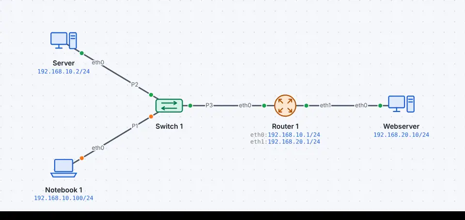
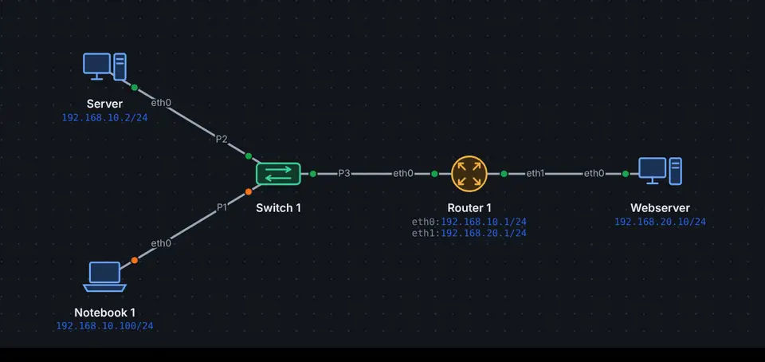

IP bringt ein Paket zum richtigen Gerät, Ports zum richtigen Programm. Ein Webserver wartet auf Port 80, SSH auf 22, SMTP auf 25. Der Client wählt einen freien Port ab 49152. Eine Verbindung ist eindeutig durch Absender, Ziel und beide Ports.
Drei-Wege-Handshake
Schritt
Flags
Bedeutung
1
SYN
Client: «Ich möchte verbinden, meine Startnummer ist x»
2
SYN, ACK
Server: «Einverstanden, meine ist y, ich erwarte x+1»
3
ACK
Client: «Ich erwarte y+1» – die Verbindung steht
Der TCP-Kopf
Ohne Optionen 20 Byte. Im ersten Segment (SYN) steht meist die Option MSS, dann ist der Kopf 24 Byte lang. Werte aus der HTTP-Anfrage der Demo «Webserver».
TCPSegment · RFC 9293
0481216202428
Quellport16 Bit49152
Zielport16 Bit80
Sequenznummer32 Bit11001
Bestätigungsnummer32 Bit51001
Kopflänge4 Bit5
Reserviert4 Bit0
Flags8 BitACK, PSH
Fenster16 Bit64240
Prüfsumme16 Bit0xeed9
Urgent Pointer16 Bit0
Optionen0–40 Byte
Datenvariabel100 Byte
Jede Zeile hat 32 Bit (4 Byte), Bit 0 links, so zeichnen die RFCs ihre Köpfe. Gestrichelt: variabel oder optional. Zeigen auf ein Feld erklärt es.
Feld
Länge
Wert im Beispiel
Bedeutung
Quellport
16 Bit (2 Byte)
49152
Port des sendenden Programms, beim Client meist zufällig ab 49152.
Zielport
16 Bit (2 Byte)
80
Port des Dienstes: 80 HTTP, 443 HTTPS, 22 SSH, 25 SMTP.
Sequenznummer
32 Bit (4 Byte)
11001
Nummer des ersten Daten-Bytes in diesem Segment; beim SYN die zufällige Startnummer.
Bestätigungsnummer
32 Bit (4 Byte)
51001
Das nächste Byte, das erwartet wird (gilt, wenn ACK gesetzt ist).
Kopflänge
4 Bit
5
Kopflänge in 32-Bit-Wörtern: 5 = 20 Byte ohne Optionen.
Reserviert
4 Bit
0
Reserviert, immer 0.
Flags
8 Bit
ACK, PSH
SYN Verbindung aufbauen, ACK Bestätigung gültig, FIN abbauen, RST abbrechen, PSH sofort weitergeben, URG, ECE und CWR für Stau.
Fenster
16 Bit (2 Byte)
64240
So viele Bytes darf die Gegenseite noch ohne Bestätigung senden (Flusssteuerung).
Prüfsumme
16 Bit (2 Byte)
0xeed9
Prüfsumme über Kopf, Daten und einen Pseudokopf mit den IP-Adressen.
Urgent Pointer
16 Bit (2 Byte)
0
Nur mit URG: Ende dringender Daten; heute kaum genutzt.
Optionen (optional)
0–40 Byte
Z.B. MSS (grösstes Segment), Window Scale, SACK, Zeitstempel; meist im SYN.
Daten
variabel
100 Byte
Die Daten der Anwendung, z.B. die HTTP-Anfrage.
Werte: Echter Rahmen aus der Demo «DNS, TCP und HTTP» (Nr. 36, 158 Byte), so zeigt ihn auch die Paketliste in leyoNET.
Zuverlässigkeit
Jedes Byte hat eine Sequenznummer. Der Empfänger bestätigt mit der ACK-Nummer, welches Byte er als Nächstes erwartet. Fehlt die Bestätigung, sendet der Absender erneut. Grosse Daten werden in Segmente geteilt (MSS 1460 Byte bei Ethernet). Den Abbau leitet ein FIN ein, jede Seite bestätigt; ein RST bricht sofort ab, z.B. wenn auf dem Port niemand wartet.
In leyoNET
Im Browser eines PCs eine Webseite aufrufen, dann in der Paketliste mit tcp filtern. Ein Klick auf ein Paket und «TCP-Verbindung folgen» zeigt alle Segmente der Verbindung. netstat in der Befehlszeile listet offene Verbindungen.
Beispiel ansehen


Zeitlupe So sieht es in der Simulation aus: Jeder Punkt ist ein Rahmen auf dem Kabel.DNS, TCP und HTTP
Ein Notebook ruft über einen Router eine Webseite ab.
DNS-Abfrage nach www.schule.example, TCP-Handshake (SYN, SYN-ACK, ACK) und die HTTP-Anfrage im Browser.
«Live ansehen» öffnet das Netz in leyoNET, die Simulation läuft in einer Schleife. In der App findest du es unter Datei → Demo-Netze, mit Führung Schritt für Schritt.
Üben
★★★★☆Protokollanalyse – Auftrag 3: ARP, DNS und HTTP· 7 Ziele · Arbeitsblatt
★★★☆☆Webseite über DNS aufrufen· 3 Ziele · Arbeitsblatt
In leyoNET unter Werkzeuge → Aufgaben-Katalog. Jede Übung prüft sich selbst.
Was leyoNET vereinfacht
Protokoll
Schicht
Vereinfachung in der Simulation
TCP
4
Drei-Wege-Handshake, Sequenznummern in Bytes, MSS 1460, Wiederholung nach 1 s (höchstens dreimal), FIN/RST; feste Fenstergrösse, keine Staukontrolle
UDPDer schnelle, verbindungslose Transport für DNS, DHCP und RIP: ohne Handshake, ohne Bestätigung, nur Ports und Prüfsumme.
HTTPWie der Browser eine Webseite holt: URL, DNS, TCP-Verbindung, GET-Anfrage, Statuscode und Antwort – Byte für Byte.
OSI-Modell und KapselungSieben Schichten, die jede Netzwerkverbindung beschreiben, und warum ein Paket wie eine russische Puppe aufgebaut ist.
Aufbau von Rahmen und PaketenWie Ethernet-Rahmen, IPv4- und IPv6-Pakete, TCP-Segmente und UDP-Datagramme ineinanderstecken, Feld für Feld nach Norm, mit echten Bytes aus leyoNET.